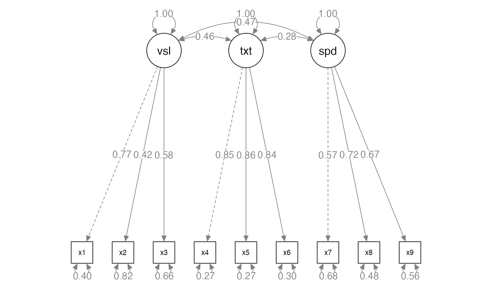
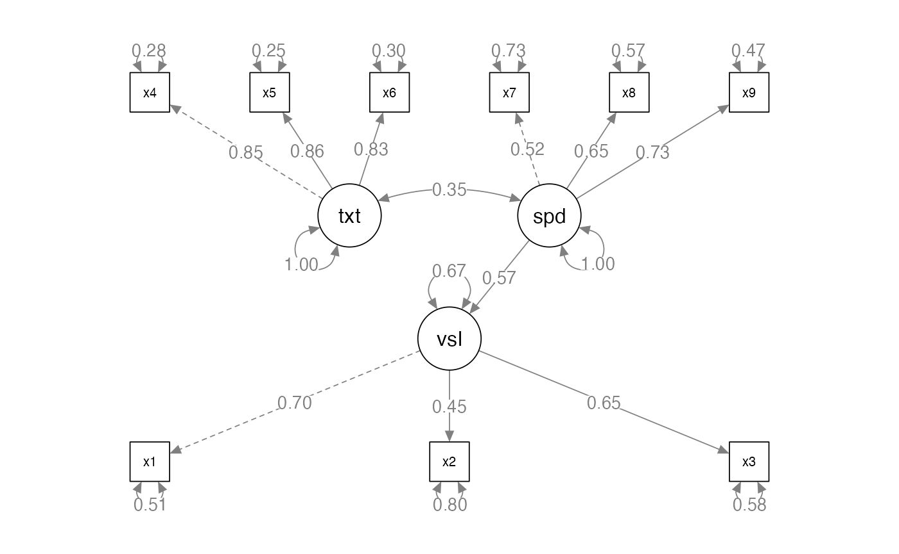
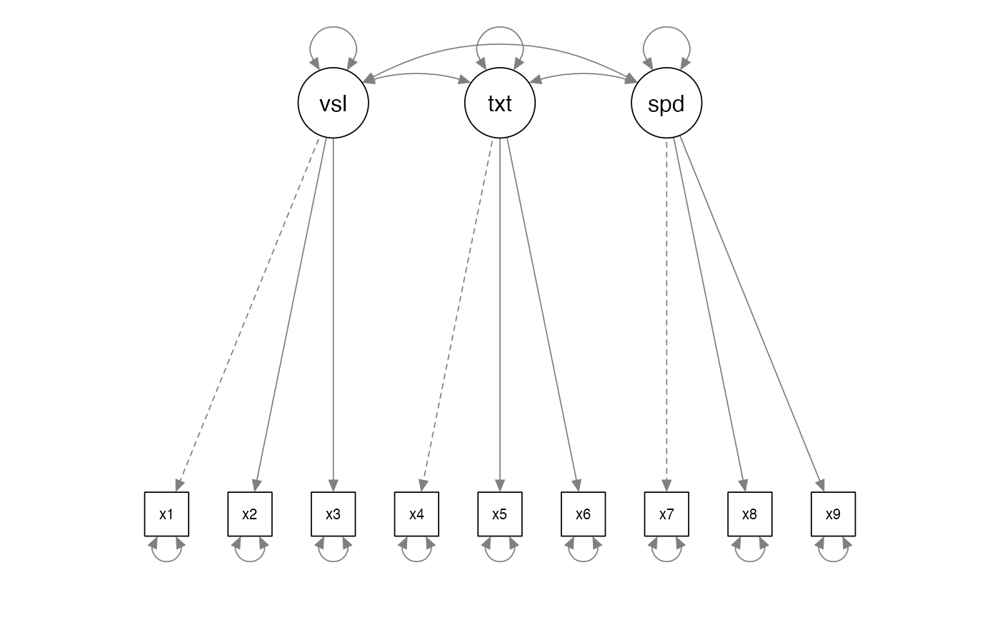

Terms and Concepts
lecture_terms.RmdStructural Equation Modeling
- Regression on steroids
- Model many relationships at once, rather than run single regressions
- Model variables that don’t technically exist!
Structural Equation Modeling
- Model theorized causal relationships
- Even if we did not measure them in a causal way, we can specify direction
- A mostly confirmatory procedure
- Generally, you have a theory about the relationship before hand
- Less descriptive/exploratory than traditional hypothesis testing
- Specific error control
- You can be more specific about the error terms, rather than just one overall residual
Concepts
- Latent variables
- Represented by circles
- Abstract phenomena you are trying to model
- Are not represented by a number in the dataset
- Linked to the measured variables
- Represented indirectly by those variables
Concepts
- Manifest or observed variables
- Represented by squares
- Measured from participants, business data, or other sources
- While most measured variables are continuous, you can use categorical and ordered measures as well
Concepts

- Exogenous
- These are synonymous with independent variables
- They are thought to be the cause of something.
- You can find these in a model where the arrow is leaving the variable
- Exogenous (only) variables do not have an error term
- Changes in these variables are represented by something else you aren’t modeling (like age, gender, etc.)
Concepts
- Endogenous
- These are synonymous with dependent variables
- They are caused by the exogenous variables
- In a model diagram, the arrow will be coming into the variable
- Endogenous variables have error terms (assigned automatically by the software)
Concepts
- Remember that
Y ~ X + - Here that is
Endogenous ~ Exogenous + Residual - Sometimes people call residuals: disturbances
Concepts
- Measurement model
- The relationship between an exogenous latent variable and measured variables only.
- Generally used when describing a confirmatory factor analysis

Concepts
- Full SEM or fully latent SEM
- A measurement model + causal relationships between latent variables


Interpreting a SEM Diagram
- Recap:
- Circles are latent variables or error terms
- They do not have numbers in the dataset
- Squares are measured or manifest variables
- They will have a number in the dataset
- Single headed arrows indicate predicted direction of relationship (–>)
- Double headed arrows indicate variance or covariance (<–>)
Parameters
Unstandardized estimates
- Single arrows are:
- Between two variables that aren’t latent –> measured:
regressions ~ - Between measured and latents:
latent variables =~ - Indicate the coefficient b - the relationship between these two variables, like regression
- Between two variables that aren’t latent –> measured:
- Double arrows are:
-
Covariances ~~: the amount two variables vary together - Remember that covariance is not scaled
-
Parameters
#> lavaan 0.6-19 ended normally after 35 iterations
#>
#> Estimator ML
#> Optimization method NLMINB
#> Number of model parameters 20
#>
#> Number of observations 301
#>
#> Model Test User Model:
#>
#> Test statistic 104.570
#> Degrees of freedom 25
#> P-value (Chi-square) 0.000
#>
#> Parameter Estimates:
#>
#> Standard errors Standard
#> Information Expected
#> Information saturated (h1) model Structured
#>
#> Latent Variables:
#> Estimate Std.Err z-value P(>|z|)
#> visual =~
#> x1 1.000
#> x2 0.643 0.114 5.650 0.000
#> x3 0.899 0.135 6.637 0.000
#> textual =~
#> x4 1.000
#> x5 1.129 0.066 16.992 0.000
#> x6 0.926 0.056 16.499 0.000
#> speed =~
#> x7 1.000
#> x8 1.178 0.176 6.695 0.000
#> x9 1.304 0.193 6.774 0.000
#>
#> Regressions:
#> Estimate Std.Err z-value P(>|z|)
#> visual ~
#> speed 0.831 0.159 5.215 0.000
#>
#> Covariances:
#> Estimate Std.Err z-value P(>|z|)
#> textual ~~
#> speed 0.196 0.048 4.118 0.000
#>
#> Variances:
#> Estimate Std.Err z-value P(>|z|)
#> .x1 0.694 0.107 6.470 0.000
#> .x2 1.107 0.102 10.848 0.000
#> .x3 0.738 0.096 7.696 0.000
#> .x4 0.381 0.048 7.867 0.000
#> .x5 0.423 0.058 7.227 0.000
#> .x6 0.365 0.044 8.368 0.000
#> .x7 0.869 0.083 10.494 0.000
#> .x8 0.585 0.070 8.383 0.000
#> .x9 0.480 0.072 6.685 0.000
#> .visual 0.447 0.103 4.324 0.000
#> textual 0.970 0.112 8.664 0.000
#> speed 0.315 0.078 4.019 0.000Parameters
Standardized estimates: note there are several ways to “standardize” the solution, we will cover this more later
- Single arrows are:
-
Regressions ~: the coefficient, z-scored b -
Latent variables =~: the correlation between a measured and latent variable, usually called loadings like EFA
-
- Double arrows are:
-
Covariance ~~: the correlation between two variables
-
- R-Squared: SMCs, Squared Multiple Correlation: variance accounted for in that endogenous variable
Parameters
#> lavaan 0.6-19 ended normally after 35 iterations
#>
#> Estimator ML
#> Optimization method NLMINB
#> Number of model parameters 20
#>
#> Number of observations 301
#>
#> Model Test User Model:
#>
#> Test statistic 104.570
#> Degrees of freedom 25
#> P-value (Chi-square) 0.000
#>
#> Parameter Estimates:
#>
#> Standard errors Standard
#> Information Expected
#> Information saturated (h1) model Structured
#>
#> Latent Variables:
#> Estimate Std.Err z-value P(>|z|) Std.lv Std.all
#> visual =~
#> x1 1.000 0.815 0.700
#> x2 0.643 0.114 5.650 0.000 0.524 0.446
#> x3 0.899 0.135 6.637 0.000 0.733 0.649
#> textual =~
#> x4 1.000 0.985 0.847
#> x5 1.129 0.066 16.992 0.000 1.112 0.863
#> x6 0.926 0.056 16.499 0.000 0.912 0.834
#> speed =~
#> x7 1.000 0.561 0.516
#> x8 1.178 0.176 6.695 0.000 0.661 0.654
#> x9 1.304 0.193 6.774 0.000 0.731 0.726
#>
#> Regressions:
#> Estimate Std.Err z-value P(>|z|) Std.lv Std.all
#> visual ~
#> speed 0.831 0.159 5.215 0.000 0.572 0.572
#>
#> Covariances:
#> Estimate Std.Err z-value P(>|z|) Std.lv Std.all
#> textual ~~
#> speed 0.196 0.048 4.118 0.000 0.354 0.354
#>
#> Variances:
#> Estimate Std.Err z-value P(>|z|) Std.lv Std.all
#> .x1 0.694 0.107 6.470 0.000 0.694 0.511
#> .x2 1.107 0.102 10.848 0.000 1.107 0.801
#> .x3 0.738 0.096 7.696 0.000 0.738 0.579
#> .x4 0.381 0.048 7.867 0.000 0.381 0.282
#> .x5 0.423 0.058 7.227 0.000 0.423 0.255
#> .x6 0.365 0.044 8.368 0.000 0.365 0.305
#> .x7 0.869 0.083 10.494 0.000 0.869 0.734
#> .x8 0.585 0.070 8.383 0.000 0.585 0.573
#> .x9 0.480 0.072 6.685 0.000 0.480 0.473
#> .visual 0.447 0.103 4.324 0.000 0.673 0.673
#> textual 0.970 0.112 8.664 0.000 1.000 1.000
#> speed 0.315 0.078 4.019 0.000 1.000 1.000
#>
#> R-Square:
#> Estimate
#> x1 0.489
#> x2 0.199
#> x3 0.421
#> x4 0.718
#> x5 0.745
#> x6 0.695
#> x7 0.266
#> x8 0.427
#> x9 0.527
#> visual 0.327Types of Research Questions
- Adequacy of the model
- Model fit, , and fit indices
- No errors or Heywood cases
- Low residuals, modification indices
- Testing Theory
- Path significance: note large sample sizes, instead path size
- Are there better competing models?
- Modification indices
Types of Research Questions
- Amount of variance (effect size): SMCS
- Parameter Estimates: direction and strength
- Group differences:
- Multi-group models, multiple indicators models (MIMIC)
- Longitudinal differences with Latent Growth Curves
- Multilevel modeling on repeated measures datasets
Practical Issues
- Sample size: for parameter estimates to be accurate, you should have large samples
- How many? Hard to say, but often hundreds are necessary
- http://web.pdx.edu/~newsomj/semclass/ho_sample%20size.pdf
- https://www.ncbi.nlm.nih.gov/pmc/articles/PMC4334479/
Practical Issues
- Sample Size: The N:q rule
- Number of people, N
- q number of estimated parameters
- You want the N:q ratio to be 20:1 or greater in a perfect world, 10:1 if you can manage it.
Hypothesis Testing
- Theory + Model Building
- Get the data
- Build the model
- Run the model
- Examine model fit with fit statistics
- Update, replicate
Hypothesis Testing
- Examining model fit is based on residuals
- Residuals are the error terms
-
Y ~ X + - Want the residuals to be as small as possible
- Those residuals are estimated from model (i.e., they are circles)
- Smaller error implies that the model and data match - a more accurate representation of the relationships you are trying to model
Approaches to Modeling
- Strictly confirmatory
- You have a theorized model and you accept or reject it only.
- Alternative models
- Comparison between many different models of the construct
- These models are common in scale development, comparing the number of expected factors
- Model generating
- The original model doesn’t work, so you improve it for further testing
- Sometimes called E-SEM

Specification
- Specification is:
- Generating the model hypothesis
- Drawing out how you think the variables are related
- Defining the model code
- Errors:
- LOVE: left out variable error
- Omitted predictors that are important but left out
- Practically: you diagrammed something wrong, typed the code incorrectly, etc.
Identification
- To be able to understand identification, you have to understand that SEM is an analysis of covariances
- You are trying to explain as much of the variance between variables with your model
- You can also estimate a mean structure
- Often used in multigroup analysis
Identification
- Models that are identified have a unique answer
-
2x = 4has one answer -
2x + y = 10has many answers
-
- Models that are identified have one probable answer for all the parameters you are estimating
Identification
- Identification is tied to:
- Parameters to be estimated
- Degrees of Freedom
- Most software programs help you out but always look for warnings
Identification
- Free parameter – will be estimated from the data
- Fixed parameter – will be set to a specific value
- Sometimes set to 1 as an indicator or marker
variable
- Sometimes practically set when model issues arise
- Sometimes set to 1 as an indicator or marker
variable
- Constrained parameter – estimated from the data with some specific
rule
- Setting a value equal to another parameter
- Also known as an equality constraint
- Cross group equality constraints – mostly used in multigroup models, forces the same paths to be equal (but estimated) for each group
Identifying What’s What

- 3 variances on latent variables
- 3 covariances between latent variables
- 6 latent variable loadings
- 9 error variances
Identifying What’s What
- Degrees of Freedom
- DF is not related to sample size
- Calculate possible parameters:
- P is the number of measured variables
- = 45
- Subtract the number of estimated parameters
- 45 - 21 = 24
Identifying What’s What
- Did we get it right?
#> lavaan 0.6-19 ended normally after 35 iterations
#>
#> Estimator ML
#> Optimization method NLMINB
#> Number of model parameters 21
#>
#> Number of observations 301
#>
#> Model Test User Model:
#>
#> Test statistic 85.306
#> Degrees of freedom 24
#> P-value (Chi-square) 0.000
#>
#> Parameter Estimates:
#>
#> Standard errors Standard
#> Information Expected
#> Information saturated (h1) model Structured
#>
#> Latent Variables:
#> Estimate Std.Err z-value P(>|z|)
#> visual =~
#> x1 1.000
#> x2 0.554 0.100 5.554 0.000
#> x3 0.729 0.109 6.685 0.000
#> textual =~
#> x4 1.000
#> x5 1.113 0.065 17.014 0.000
#> x6 0.926 0.055 16.703 0.000
#> speed =~
#> x7 1.000
#> x8 1.180 0.165 7.152 0.000
#> x9 1.082 0.151 7.155 0.000
#>
#> Covariances:
#> Estimate Std.Err z-value P(>|z|)
#> visual ~~
#> textual 0.408 0.074 5.552 0.000
#> speed 0.262 0.056 4.660 0.000
#> textual ~~
#> speed 0.173 0.049 3.518 0.000
#>
#> Variances:
#> Estimate Std.Err z-value P(>|z|)
#> .x1 0.549 0.114 4.833 0.000
#> .x2 1.134 0.102 11.146 0.000
#> .x3 0.844 0.091 9.317 0.000
#> .x4 0.371 0.048 7.779 0.000
#> .x5 0.446 0.058 7.642 0.000
#> .x6 0.356 0.043 8.277 0.000
#> .x7 0.799 0.081 9.823 0.000
#> .x8 0.488 0.074 6.573 0.000
#> .x9 0.566 0.071 8.003 0.000
#> visual 0.809 0.145 5.564 0.000
#> textual 0.979 0.112 8.737 0.000
#> speed 0.384 0.086 4.451 0.000Identification
- Just identified models mean the df = 0
- Generally, not a good sign
- Cross panel lagged models are set up this way on purpose
- Over identified models mean df > 0
- You want this!
- Under identified models mean the df < 0
- You can’t run this!
Identification
- Empirical under identification
- When two observed variables are highly correlated, which effectively reduces the number of parameters you can estimate
- Even if you have an over identified model, you can have under identified sections
Identification
- How do I create identified models?
- Scaling/reference/marker variables: a parameter you set to 1
- Helps increase df by eliminating a free parameter
- Gives the model a scale
- Can be done in a couple of ways, generally on the measurement model
- Pay attention to the number of variables attached to a latent variable in a measurement model
Identification
- Does the marker variable matter?
- No, it should not change the model if you change which variable you set it to
- If it does, something is likely weird with your model
- The reference variable will not have an estimated unstandardized parameter
- You will get a standardized parameter, so you can check if the variable is loading like what you think it should
- If you need a p-value for that parameter, you can run the model twice
Identification
#> lavaan 0.6-19 ended normally after 35 iterations
#>
#> Estimator ML
#> Optimization method NLMINB
#> Number of model parameters 21
#>
#> Number of observations 301
#>
#> Model Test User Model:
#>
#> Test statistic 85.306
#> Degrees of freedom 24
#> P-value (Chi-square) 0.000
#>
#> Parameter Estimates:
#>
#> Standard errors Standard
#> Information Expected
#> Information saturated (h1) model Structured
#>
#> Latent Variables:
#> Estimate Std.Err z-value P(>|z|) Std.lv Std.all
#> visual =~
#> x1 1.000 0.900 0.772
#> x2 0.554 0.100 5.554 0.000 0.498 0.424
#> x3 0.729 0.109 6.685 0.000 0.656 0.581
#> textual =~
#> x4 1.000 0.990 0.852
#> x5 1.113 0.065 17.014 0.000 1.102 0.855
#> x6 0.926 0.055 16.703 0.000 0.917 0.838
#> speed =~
#> x7 1.000 0.619 0.570
#> x8 1.180 0.165 7.152 0.000 0.731 0.723
#> x9 1.082 0.151 7.155 0.000 0.670 0.665
#>
#> Covariances:
#> Estimate Std.Err z-value P(>|z|) Std.lv Std.all
#> visual ~~
#> textual 0.408 0.074 5.552 0.000 0.459 0.459
#> speed 0.262 0.056 4.660 0.000 0.471 0.471
#> textual ~~
#> speed 0.173 0.049 3.518 0.000 0.283 0.283
#>
#> Variances:
#> Estimate Std.Err z-value P(>|z|) Std.lv Std.all
#> .x1 0.549 0.114 4.833 0.000 0.549 0.404
#> .x2 1.134 0.102 11.146 0.000 1.134 0.821
#> .x3 0.844 0.091 9.317 0.000 0.844 0.662
#> .x4 0.371 0.048 7.779 0.000 0.371 0.275
#> .x5 0.446 0.058 7.642 0.000 0.446 0.269
#> .x6 0.356 0.043 8.277 0.000 0.356 0.298
#> .x7 0.799 0.081 9.823 0.000 0.799 0.676
#> .x8 0.488 0.074 6.573 0.000 0.488 0.477
#> .x9 0.566 0.071 8.003 0.000 0.566 0.558
#> visual 0.809 0.145 5.564 0.000 1.000 1.000
#> textual 0.979 0.112 8.737 0.000 1.000 1.000
#> speed 0.384 0.086 4.451 0.000 1.000 1.000Identification
- If you have a complex model:
- Start small – work with the measurement model components first, since they have simple identification rules
- Then work up to adding variables to see where the problem occurs
-
lavaangives you somewhat good warnings - Page 130 Kline has a great set of references for identification
Positive Definite Matrices
- Dreaded:
hessian matrix not definite - What that indicates is the following:
- Matrix is singular
- Eigenvalues are negative
- Determinants are zero or negative
- Correlations are out of bounds
Positive Definite Matrices
- Simply put: each column has to indicate something unique
- Therefore, if you have two columns that are perfectly correlated OR are linear transformations of each other, you will have a singular matrix
- Negative eigenvalues – remember that eigenvalues are combinations of
variance
- And variance is positive (it’s squared in the formula!)
- Determinants are the products of eigenvalues
- Again, they cannot be negative
- A zero determinant indicates a singular matrix
- Out of bounds – basically that means that the data has correlations over 1 or negative variances (Heywood case)